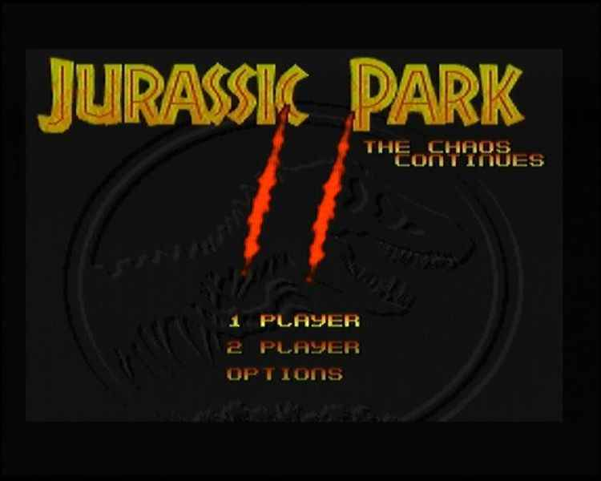
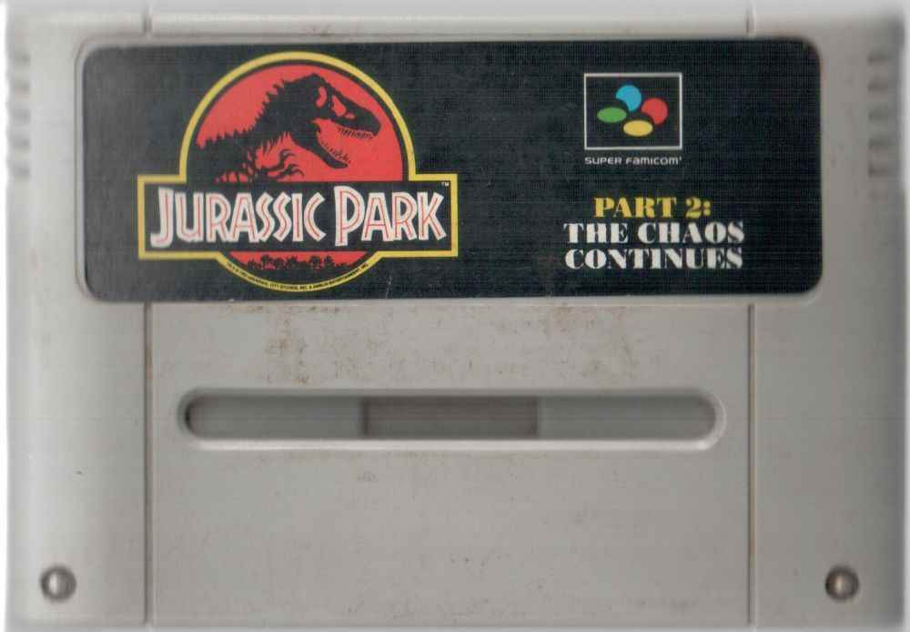
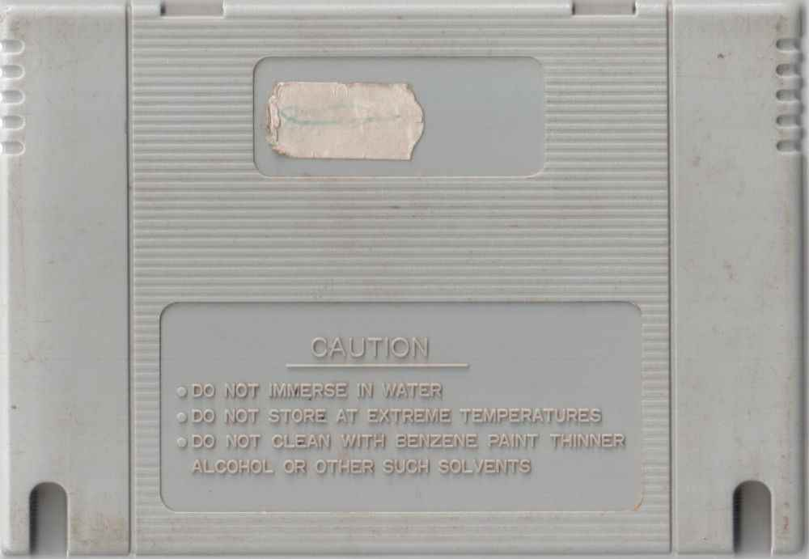
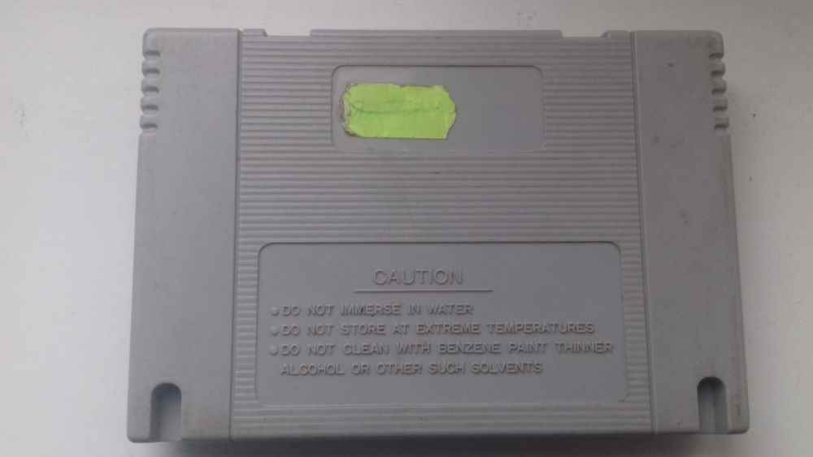
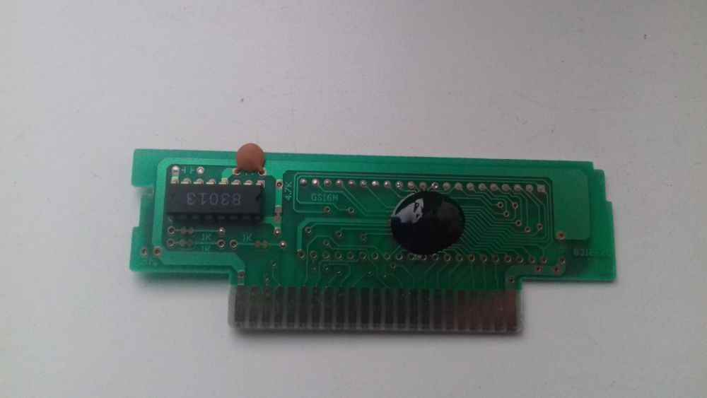
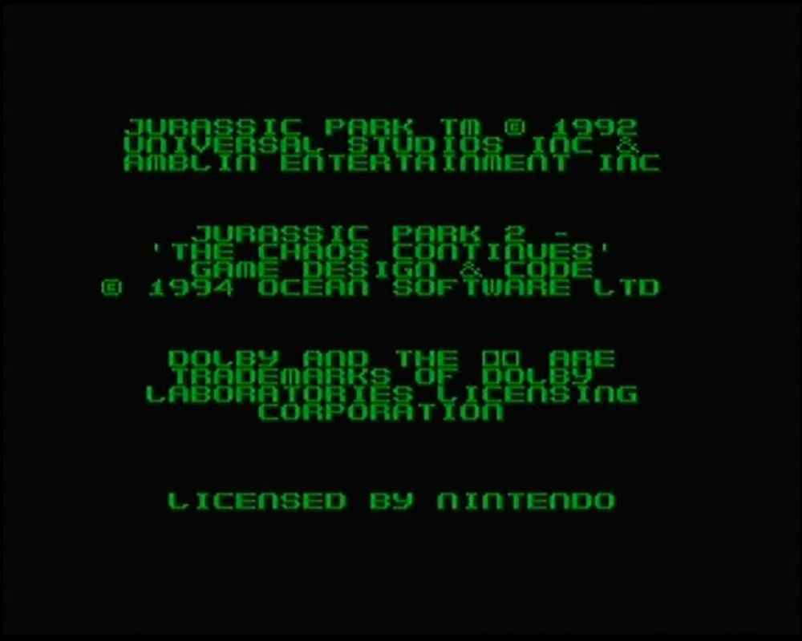

Jurassic Park Part 2: The Chaos Continues
Еще один картридж с игрой Jurassic Park 2:The Chaos Continues, сильно похож на аналогичный, но что же выдает пиратский картридж?1) Нестандартное расположение логотипа и название.
2) Отсутствие Seal Of Quality и логотипа Nintendo.
3) Логотип Super Famicom, притом что игра не выходила в японском регионе.
4) Выемки сзади вместо отверстий.
5) Плата картриджа с "каплей" - микросхемой без корпуса, залитая смолой.
Тут особо нечего говорить, отличается в основном обложкой от предыдущего экземпляра, но также замечу что тут нет замены "Lisensed by Nintendo" на что то иное.
Образец достался только голышом, никаких коробок или чего то еще с ним не было.
Картридж покупался на аукционе в 2017 году.
Игра сама по себе отличная, но сложная как мне показалось.
Внутри: Jurassic Park 2: Chaos Continues.
Дополнительные фото и описание к ним:




